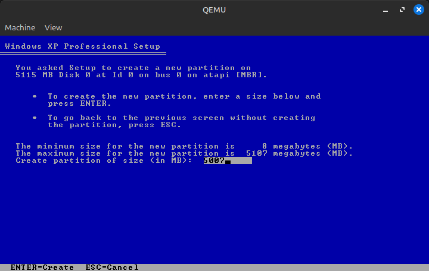
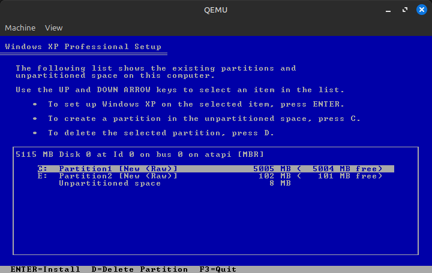
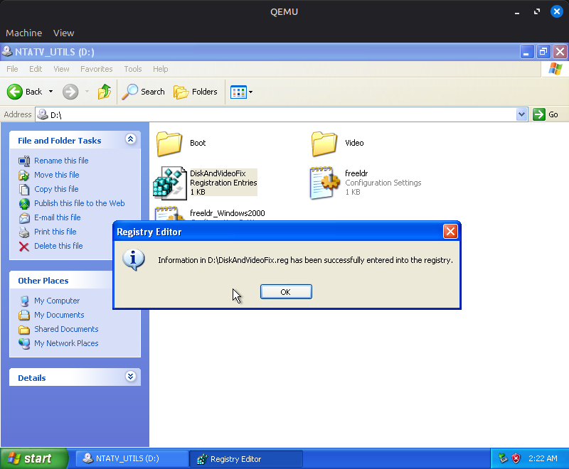
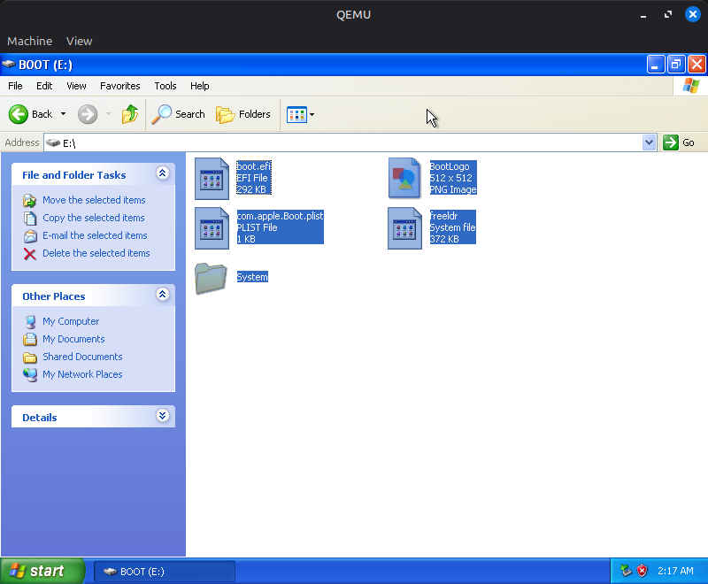
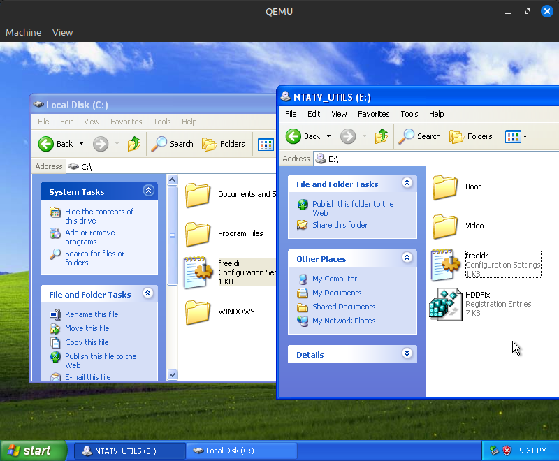
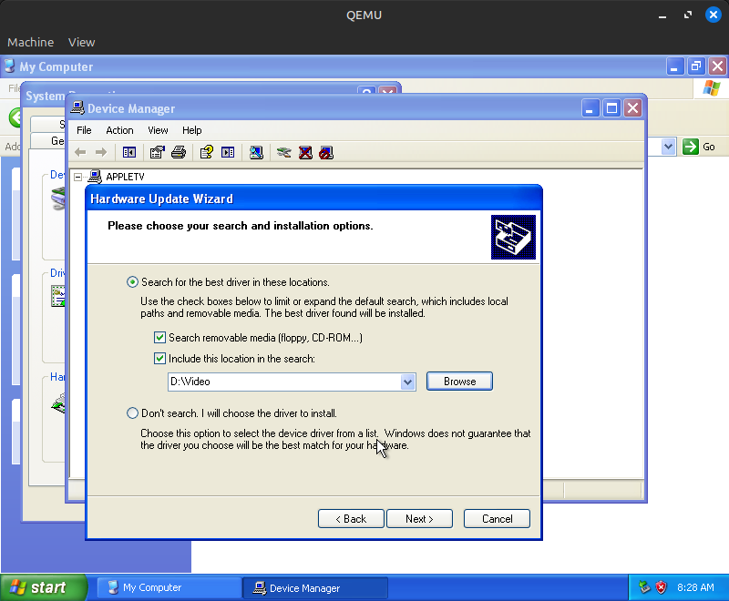
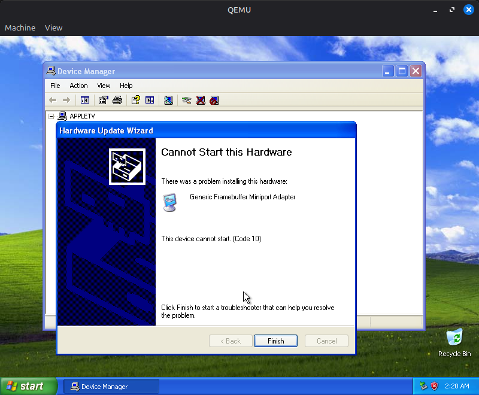

There are currently two ways to install Windows XP on the original Apple TV: the easy way, and the hard way. Both methods require you to remove the hard drive from your Apple TV and use a USB-IDE adapter to access it. Windows does not, and will almost definitely never, be able to boot from a USB drive because I'd need to write a USB stack from scratch.
A premade image can be downloaded from this Archive.org page. Simply download, extract the zip file, and use a tool like GNOME Disks, dd, Rufus, Etcher, or any other disk flashing tool to write the image to the Apple TV's hard drive (or any laptop IDE drive, the TV isn't picky thankfully). You might have to enable writing to large/hard disks for some programs, so be careful to not overwrite the wrong drive. Put the hard drive in the Apple TV, turn it on, and after a few minutes, you should be at an XP desktop! The XP install has all drivers preinstalled and configured, and uses the default Administrator account with no password. However, there are some disadvantages to doing this:
This method of installing Windows is quite a bit more involved than the previous method. You will need the following items:
First, we need a virtual hard disk image. We will restore this to the Apple TV's hard drive once the installation completes, so it must be small enough to fit on there. Use the following command:
qemu-img create appletv_windows.img 15G
This will be the amount of space available to Windows. You can resize the OS to fit the full size of the hard drive later. Ensure the size is a few gigabytes smaller than the Apple TV's hard drive, as real-world formatted capacity on hard drives is always smaller than advertised capacity.
Now that your hard drive image is created, it's time to install Windows. For this, use the following QEMU command (Linux):
qemu-system-i386 -enable-kvm -m 2048 -hda appletv_windows.img -cdrom /path/to/windowsxp.iso -boot d -device piix3-usb-uhci,id=uhci
Technical note: We must add a USB controller with the -device line so that Windows installs the USB drivers correctly. Failure to do so results in an unusable system.
For macOS, replace -enable-kvm with -accel hvf and qemu-system-i386 with qemu-system-x86_64. For Windows, enable Windows Hypervisor Platform in Programs and Features and replace -enable-kvm with -accel whpx (I haven't tested QEMU on Windows, so there might be other stuff required, googling around will help you). Alternatively, you could use VirtualBox for the install, but if you do, if you're installing Windows XP or 2003 you must enable I/O APIC in VirtualBox settings before installation. IF YOU DON'T YOU WILL REGRET IT. DON'T ASK ME HOW I KNOW THIS, AND DON'T ASK ME HOW MANY MONTHS I WASTED ON THIS PROJECT UNTIL I FIGURED THIS OUT. Counterintuitively, you don't want to enable I/O APIC on Windows 2000 because it will cause Windows to infinitely loop during setup (Windows 2000's installer sucks). We will rectify this issue later.
Once you get to the partition list, instead of pressing Enter like usual, press C to create a new partition. Make your new partition at least 20MB smaller than the full size of the disk; I usually leave a bit more room than that.

Then, create a partition on the remaining space. In the end, your partition map should look something like this:

Now, install to the larger partition. Format it as NTFS on English editions of Windows 2003 or XP SP3, and FAT32 on all other versions. Go through the installation process as normal. This should only take a few minutes unless your host system is as old as the Apple TV or you type your product key in wrong 37 times. It's also important to set an admin password here.
Once Windows is installed, we need to make sure that it goes to the login screen at startup (unless you're running Windows 2003, where auto-login shouldn't be enabled by default). This is a very important step to avoid issues with USB peripherals later on. On Windows 2000, ensure that you select "Users must enter a user name and password to use this computer." This can be be achieved by either setting a password for your user in Control Panel, or changing the login settings so that Windows asks you what user to log in as every time it boots.
Next, navigate to File Explorer and format the extra partition we created as FAT32 (use Quick Format). This will act as the EFI system partition and is where the bootloader will be stored. Once you do that, if you are using QEMU, shut down the system.
Back on the host system's command line, we now need to swap out the CDROM from the Windows ISO to the NTATV Drivers and Utilities ISO. We also need to tell QEMU to boot from the hard drive instead of the CD-ROM. The QEMU parameters should look like this:
qemu-system-i386 -enable-kvm -m 2048 -hda appletv_windows.img -cdrom /path/to/ntatv_drivers_and_utils_X.X.iso -boot c -device piix3-usb-uhci,id=uhci
Open the NTATV Utils CD in Explorer and double click on the DiskAndVideoFix registration entry. When prompted click "Yes" and you should see "Information from DiskAndVideoFix.reg has been entered into the registry". This allows Windows to boot on hardware other than the hardware it was originally installed on, and forces the video driver to autoload.

Drag the contents of the Boot folder to the FAT32 partition we just created.

Drag freeldr.ini to the root of the C: drive. For Windows 2000, drag freeldr_Windows2000.ini there and rename it to freeldr.ini. In order to rename it, you will need to unlock the file by unchecking "Read-only" in the properties menu after dragging it to the C: drive.

Now it's time to set up the video driver. Open the Device Manager by typing devmgmt.msc into the Run box, right click on "Video Controller (VGA Compatible)", and select "Update Driver...". Select "No, not this time" when asked about Windows Update, then "Install from a list or specific location (Advanced)", then include the NTATV Utils CD's Video directory in the search.

When asked about driver signing, select "Continue Anyway". The Hardware Update Wizard will either state that "This device cannot start. (Code 10)." or ask for a restart. In either case, shut down the VM.

If you are installing in VirtualBox for one reason or another, you will need to convert the VDI image from VirtualBox to a raw IMG file. Use the following command for this:
VBoxManage internalcommands converttoraw /path/to/Windows.vdi appletv_windows.img
Now, restore the appletv_windows.img to an IDE hard disk using a tool of your choice (dd, GNOME Disks, Rufus, Etcher, etc).
Important: If you are installing Windows 2000 in VirtualBox, you will also need to extract HALAACPI.DL_ (NOT HALACPI.DL_, THESE FILES HAVE SIMILAR NAMES BUT THE LATTER WILL RESULT IN AN INFINITE HANG!) to C:\WINNT\system32\hal.dll, replacing the existing file. If you're installing Windows XP/2003 or using QEMU for any version, disregard this; the right HAL is already installed.
Congratulations! If you did everything right, you successfully set up Windows on your Apple TV! Give yourself a pat on the back. Or a cookie. Or something. Do whatever you want, I'm not your dad. Now it's time to test it out. Unload the hive and disconnect the drive as before, then put it back into the Apple TV. Don't close it up just yet; if you screwed something up, it's better to find out before looking for your screwdriver for forty minutes (it's under the bottom case!). Plug in the Apple TV, wait a few minutes, and cross your fingers that nothing broke. If all goes well, you should get to the login screen a few minutes later! USB devices might take as much as 3 minutes to start working, so you won't be able to login immediately. Rest assured that the spinning of the hard drive is indicative of progress and that this is only an issue during the first boot.
Immediately upon logging in, you will be prompted with about eight "Found New Hardware" wizards (one after another) for the various hardware Windows found. For all but one of the wizards, click through this, telling Windows to automatically search for a driver without connecting to Windows Update, and ensuring that "Don't prompt me again to install this software" is checked at the end. The wizard for installation of the "Generic Framebuffer Miniport Adapter" will ask you where genfbvmp.sys and bootvid.dll are; you must manually point it to C:\WINDOWS\system32\drivers (C:\WINNT\system32\drivers on 2000) for genfbvmp.sys and C:\WINDOWS or WINNT\system32 for bootvid.dll.
Download the Boot Camp 3.1.1 drivers from here and copy them to a USB drive. Do NOT run setup.exe; instead, navigate to Boot Camp\Drivers\Broadcom and run BroadcomNetworkAdapterXP.exe. On later editions of Windows XP, you should be able to connect to Wi-Fi through the built-in Wi-Fi utilities without issue, but on Windows 2000 and likely earlier XP editions too, you'll need to do a few more things:
BroadcomNetworkAdapterXP.exe as normal
Run Boot Camp\Drivers\RealTek\RealtekSetupXP.exe from the Boot Camp 3.1.1 bundle. As mentioned in Known Issues, RCA audio plays at an extremely (unusably) low volume, but optical audio works fine.
The Realtek sound driver utility, an almost useless tool for most people, hogs over 20MB of RAM at idle. I'd recommend disabling it as a startup item in msconfig (or, in Windows 2000, deleting RTHDCPL from HKLM\Software\Microsoft\Windows\CurrentVersion\Run) to free up some RAM.
Use my patched NVIDIA driver, which can be acquired from the releases page. It's a 7-Zip self-extracting archive; run the EXE, extract it to a location of your choice, and run setup.exe. Reboot, and you should have accelerated graphics!
After the first reboot, the Display Settings window will erroneously claim that the graphics driver is not working. A second reboot seems to fix that.
By default, the NVIDIA card will steal 64MB of your system RAM for itself through something known as "TurboCache". Unless you really need 128MB of VRAM, I'd recommend disabling this due to the extremely low system RAM in the Apple TV. See this ancient forum post for instructions on how to do this.
Note: a small percentage of particularly early Apple TVs actually have 128MB VRAM on board from the factory! If you have an Apple TV with that much VRAM, consider yourself lucky. TurboCache doesn't seem to be enabled on those units unless your Apple TV has been upgraded to 512MB RAM.
Thank you Guido Lehwalder (@guidol70@mastodon.online) for getting the 86.38 driver working and Piggyhero2006 for getting the 179.48 driver working!
When you are booting into Windows, you'll notice a 40-50 second black screen before the NTATV logo appears on the screen. This is because the Windows HDD is not set as the default boot device in the Apple TV's EFI firmware. To fix this, reset the NVRAM by holding Command-Option-P-R on an attached USB keyboard (must be a wired keyboard, NOT a keyboard connected with a 2.4GHz dongle) for 50 seconds right after plugging in the Apple TV. The boot speed should be reduced by about 30 seconds once this is done.
The Windows installation can be resized using GParted, either the Linux app or the live disc. In GParted, delete the boot partition, grow the NTFS partition to at least 20MB less than the disk size, then recreate the boot partition as a FAT32 partition in the free space using the files from the NTATV driver ISO. On the first boot after you resize the disk, Windows will either reboot after a minute or two or hang indefinitely on a no-signal (if the NVIDIA drivers are installed) due to Windows running a filesystem integrity check. If Windows hangs at a no-signal, give it at least a few minutes before power cycling the Apple TV so that the filesystem check finishes.
You can try a few things:
-win2k-hack to the QEMU arguments (this shouldn't be required but sometimes solves issues) and try installing again0x0000007B BSOD
Ensure that you ran DiskAndVideoFix.reg.
Cannot load SYSTEM.ALT hive! in FreeLoader
This is due to problems with FreeLoader's NTFS driver. To fix this, install Windows onto a FAT32 partition, convert the partition to NTFS by typing convert C: /fs:ntfs in the Command Prompt, then rebooting. Note that the conversion status screen will not appear when the NVIDIA driver is installed; the system will auto-reboot after a minute or so on all but 2000 (on that OS ensure you wait a few minutes from the screen going black before hard rebooting the TV). Why this works I have no idea, but it has never failed me.
This is either due to issues with IDE SSD adapters or a failing HDD. Try a working IDE HDD.
Either you didn't set Windows to go to the login screen automatically or there's some incompatibility with Windows and the Apple TV's USB controller (this is a reported issue for some people on some Windows 2000 builds). Try unplugging and replugging the keyboard and mouse a few times and/or using a generic PC keyboard/mouse.
Replace freeldr.sys with this one. This is caused by the Windows version detection code erroneously passing in the wrong ACPI tables to Windows 2000.